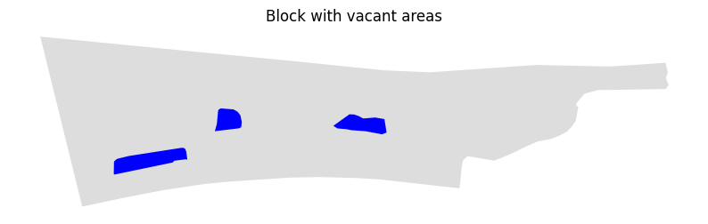

Vacant areas
Get blocks vacant areas using data from OpenStreetMap service.
[1]:
import pandas as pd
blocks_gdf = pd.read_pickle('./../../data/saint_petersburg/blocks.pickle')
[16]:
block_id = 1
block_gdf = blocks_gdf.loc[[block_id]]
[17]:
from blocksnet.analysis.vacant_area import get_vacant_areas
vacant_areas_gdf = get_vacant_areas(block_gdf)
2025-09-19 19:16:13.094 | INFO | blocksnet.analysis.vacant_area.core:_fetch_occupied_areas:36 - Fetching OSM geometries
100%|██████████| 10/10 [01:08<00:00, 6.81s/it]
2025-09-19 19:17:21.956 | INFO | blocksnet.analysis.vacant_area.core:_generate_features:52 - Generating geometries features
2025-09-19 19:17:21.959 | INFO | blocksnet.analysis.vacant_area.core:_filter_vacant_areas:65 - Filtering geometries
[18]:
vacant_areas_gdf.head()
[18]:
| geometry | area | mrr_area | length | area_to_length | area_to_mrr_area | block_id | |
|---|---|---|---|---|---|---|---|
| 0 | POLYGON ((351726.195 6633821.381, 351724.599 6... | 2218.640904 | 2502.115570 | 254.891573 | 8.704254 | 0.886706 | 1 |
| 1 | POLYGON ((351961.157 6633866.017, 351954.355 6... | 1446.784544 | 1864.244116 | 182.976961 | 7.906922 | 0.776070 | 1 |
| 2 | POLYGON ((351794.179 6633895.371, 351800.337 6... | 1026.502040 | 1318.355779 | 125.806252 | 8.159388 | 0.778623 | 1 |
[22]:
ax = block_gdf.plot(color='#ddd', figsize=(10,8))
vacant_areas_gdf.plot(ax=ax, color='blue')
ax.set_axis_off()
ax.set_title('Block with vacant areas')
[22]:
Text(0.5, 1.0, 'Block with vacant areas')
